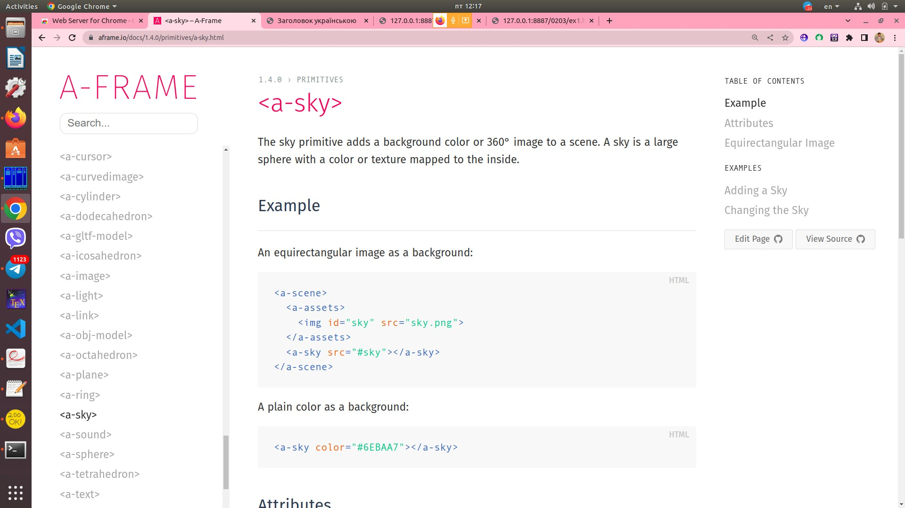

<!DOCTYPE html>

<html>
	<script src="/js/aframe/aframe.min.js"></script>
	<a-scene>
		<!--<a-assets>
			
		</a-assets>
		<a-sky src="#sky"></a-sky>-->
		<a-sky color="grey"></a-sky>
		<a-torus position="-2 1 -5" color="green" radius="1.2" arc="360" wireframe="false" src="owl.jpg"></a-torus>
		<a-plane width="7" height="7" rotation="50 0 0"
position="-2 -2 -5" color="purple"></a-plane>
		<a-cylinder color="yellow" height="2" radius="0.05"
position="-2 -1 -5"></a-cylinder>
		<a-cylinder color="blue" height="2" radius="0.05"
position="-3 -1 -5"></a-cylinder>
		<a-torus-knot color="orange" radius="1.2"
position="-3 1 -5"></a-torus-knot>
		<a-plane width="9" height="2" position="3 1 -9"></a-plane>
		<a-text value="Welcome to browser's VR" color="black"
width="10" position="-0.5 1 -6"></a-text>
	</a-scene>
</html>
